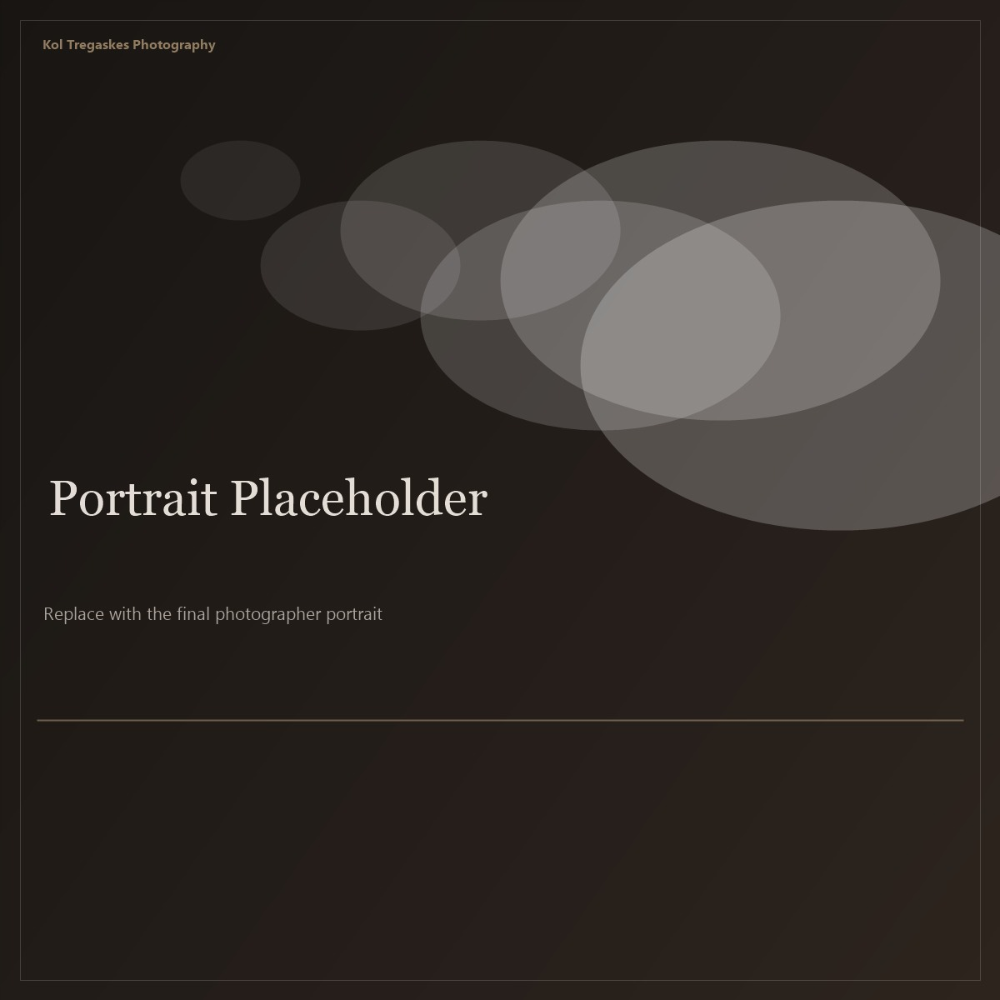

Photographer based in the United Kingdom. Working across landscape, architecture, urban, and documentary photography.
My work tends toward the quiet and observational — finding composition in everyday structures, light in ordinary places, and the visual rhythms that most people walk past without noticing.
I shoot primarily with natural light and favour clean, considered compositions. I'm drawn to geometry in architecture, atmosphere in landscape, and honesty in documentary work.
Previously published on 500px and Adobe Portfolio. This site is the permanent home for my work.